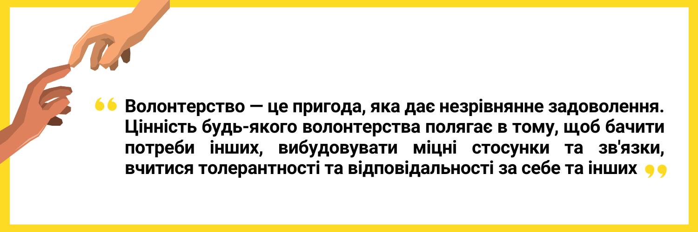

Щастя. Його ми шукаємо у розмовах, статтях, книгах, фільмах, музиці, але насправді воно є біля нас — це допомагати іншим. Саме це приносить найбільшу радість та задоволення людям. Волонтерити — це отримувати, ті емоції, які не купиш за жодні гроші. Навіть у театрі. Уявіть лише емоції тих, хто отримав допомогу чи вдячність людини, яка потребує підтримки.
Щоденно кількість тих, хто приєднується до волонтерського руху в Україні зростає. І тобі варто знати, що волонтером може бути кожен. Для цього не потрібно мати надзвичайних вмінь чи навичок. Найважливіше мати бажання і розуміти, що ти хочеш досягти. Волонтерство не має вікових обмежень. Пам'ятай.
Волонтерство — це хребет громадянського суспільства. А волонтери — рушійна сила змін. Вони відіграють значну роль у процесі формування суспільства. Волонтери — це ті, хто працюють для інших добровільно та без винагороди. Вони підтримують різні акції, ініціативи та некомерційні організації. Це їх добровільна інвестиція свого часу. Попри багато труднощів та відсутності фінансової винагороди, щоразу більше людей ставить собі питання: для чого варто ставати волонтером?
Якщо ви коли-небудь казали собі: «Я не знаю, що мені робити». То у нас є хороші новини. Для вас волонтерство може стати можливістю зрозуміти чи відшукати себе, або навіть свій шлях.
Хочеш стати волонтером? То перш за все ти маєш бути відкритим для інших та навчитись співпрацювати з людьми, які потребують допомоги. Також тобі знадобиться комунікативність та емпатійність. Але без позитивного ставлення до життя, витривалості, мотивації та заангажованості не обійтись.
Я розробник-початківець. Цим стартапом я б хотів зробити внесок в нашу спільну перемогу.